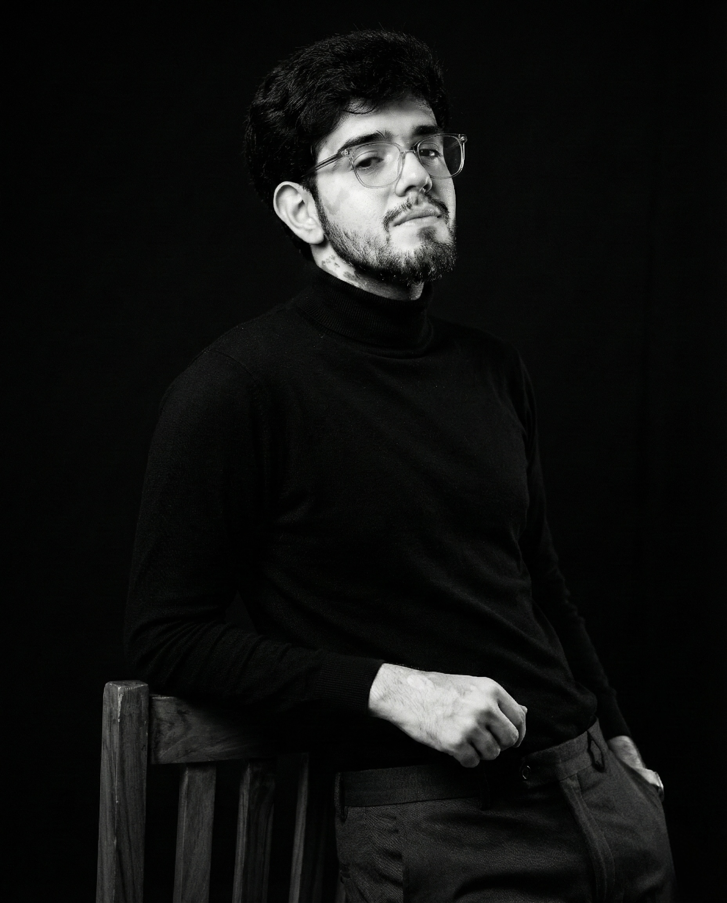

Z′(B−L) → e⁺e⁻ · μ⁺μ⁻ · hadrons · νν̅ — Model-Independent Dark Vector Physics
M.Sc. Physics · Ludwig Maximilian University of Munich
Currently seeking PhD positions in particle phenomenology
I hold a B.Sc. in Physics, Mathematics, and Electronics from CHRIST University,
Bangalore, and am completing an M.Sc. in Physics at LMU Munich — focused on
particle phenomenology and data-driven simulations. My master's thesis at the
Max Planck Institute for Physics built simulation frameworks for exotic B−L boson
searches. In 2024–25 I was at CERN in Geneva as a Run Control Expert, maintaining
real-time data acquisition during live detector runs.
The two practices — physics and photography — feel, to me, like the same instinct:
trying to describe something precisely enough that it becomes visible.

I make photographs that hold a look. Working between India and Europe — shooting fashion editorials, weddings, and portraits. VRASA started as a journal: every shoot is an issue, complete in itself.